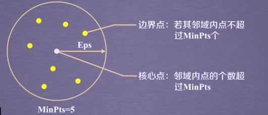

BIT 《Python机器学习应用》
Imagine a shawllow understanding of Machine Learning and Sklearn tools through this course,build some knowledge Graph for subsequent Kaggle tutorials and Sklearn tools.
Including Clusering、Dimension Reduction、Classification、Regression、Reinforecement Learning.
Course ulr：Python 机器学习应用
Code & Files：Machine Learning with Python
Part 1:Basics Knowledge
1.Machine Learning classification:
- Supervised Learning : label
- UnSupervised Learning : No label
- Reinforcement Learning : Observe the feedback
- Semi-supervised Learning : Between supervised learning and unsupervised learning
- Deep Learning:neural network model
2.scikit-learn
scikit-learn Machine Learning in Python
- Simple and efficient tools for data mining and data analysis
- Built on NumPy,SciPy,and matplotlib
Scikit-learn common function
| Type | Application | Algorithm |
|---|---|---|
| Classification | 异常检测,图像识别 | KNN,SVM,etc |
| Clustering | 图像分隔，群体划分 | K-Means，谱聚类，etc |
| Regression | 价格预测，趋势预测 | 线性回归，SVR,etc |
| Dimension Reduction | 可视化 | PCS,NMF,etc |
Dataset
- 波士顿房价数据集：sklearn.datasets.load_boston
- 鸢尾花数据集
- 手写数字数据集
sklearn Basics Function
- Classification
- Clustering
- Regression
- Dimension Reduction
- Model Select
- Data preprocessing
Part 2:UnSupervised Learning
利用无标签的数据学习数据的分布或数据与数据之间的关系被称为无监督学习，Supervised Learning 和 UnSupervised Learning 之间的最大区别在于是否有标签。无监督学习最常用的场景是 Clustering（聚类） 和 Dimension Reduction（降类）
1-Clusering
Clusering 就是根据数据的相似性将数据分为多类的过程。评估两个不太样本之间的相似性，通常使用的方法就是计算两个样本之间的距离。使用不同的方法计算样本间的距离会关系到Clusering 结果的好坏。
1.1 常用距离测量方法
- 欧式距离
- 曼哈顿距离
- 马氏距离
- 余弦相似度
1.2 sklearn.cluster
| 算法名称 | 参数 | 可扩展性 | 相似性度量 |
|---|---|---|---|
| K-means | 聚类个数 | 大规模数据 | 点间距离 |
| DBSCAN | 邻域大小 | 大规模数据 | 点间距离 |
| Gaussiaa MixTures | 聚类个数及其它超参 | 复杂度高，不适合处理大规模数据 | 马氏距离 |
| Birch | 分支因子，阈值等其他超参 | 大规模数据 | 两点间的欧氏距离 |
1.3 K-means 聚类算法
K-means 算法以k为参数，把n个对象分成k个簇，使簇内具有较高的相似度，而簇间的相似度较低。
- 随机选择k个点作为初始的聚类中心
- 对于剩下的点，根据其与聚类中心的距离，将其归入最近的簇
- 对每个簇，计算所有点的均值作为新的聚类中心
- 重复2、3直到聚类中心不在改变
应用一 聚类方法了解1999年各个省份的消费水平在国内的情况
1 | import numpy as np |
输出1
2
3
4
5
6
7
8Expenses:5678.62
['天津', '浙江', '福建', '重庆', '西藏']
Expenses:3788.76
['河北', '山西', '内蒙古', '辽宁', '吉林', '黑龙江', '江西', '山东', '河南', '贵州', '陕西', '甘肃', '青海', '宁夏', '新疆']
Expenses:7754.66
['北京', '上海', '广东']
Expenses:4512.27
['江苏', '安徽', '湖南', '湖北', '广西', '海南', '四川', '云南']
拓展&改进
- 计算两条数据相似性时，Sklearn的K-mearns 默认使用的时欧氏距离。虽然还有余弦相似度，马氏距离等多种方法，但没有设定计算距离方法的参数。我们可以通过修改Sklearn的源码方式来支持使用不同的距离算法。
- 我们可以通过修改
n_clusters的参数值来实现最后的输出簇的数量的不同，但是可以很清晰的发现，在各类输出中，北上广三个城市总是会在一个簇类中。
1.4 DBSCAN 密度聚类算法
DBSCAN 算法是一种基于密度的聚类算法：
- 聚类的时候不需要预先指定簇的个数
- 最终的簇的个数不定
DBSCAN 算法将数据点分为三类：
- 核心点：在半径Eps内含有超过 MinPts 数目的点
- 边界点：在半径Eps内点的数量小于MinPts，但是落在核心点的领域内
- 噪音点：既不是核心点也不是边界点的点

核心点的领域周围的黄色的点是超过MinPts（5）个的所以称为核心点。
DBSCAN算法流程：
- 将所有的点标记为核心点、边界点或噪声点
- 删除噪声点
- 为距离在Eps之内的所有核心点之间赋予一条边
- 每组连通的核心点形成一个簇
- 将每个边界点指派到一个与之关联的核心点的簇中（哪一个核心点的半径范围之内）
应用二 DBSCAN聚类方法分析学生上网时间和上网时长的模式
1
2
3
4
5
6
7
8
9
10
11
12
13
14
15
16
17
18
19
20
21
22
23
24
25
26
27
28
29
30
31
32
33
34
35
36
37
38
39
40
41
42
43
44
45
46
47
48
49
50
51
52
53
54
55
56
57'''
BIT 课程第一周 第一单元
author : afrunk
time:2019-7-25 16:57
'''
import numpy as np
from sklearn.cluster import DBSCAN
'''
主要参数
eps:两个样本被看作邻居节点的最大距离
min_samples:簇的样本数
metric:距离的计算方法 可选
如 sklearn.cluter.DBSCAN(eps=0.5,min_samples = 5,metric ='euclidean') # 欧式距离算法
'''
import sklearn.cluster as skc
from sklearn import metrics
import matplotlib.pyplot as plt
mac2id = dict()
onlinetimes = []
f = open('TestData.txt', encoding='utf-8')
for line in f:
mac = line.split(',')[2] #mac地址
onlinetime = int(line.split(',')[6])#上网时间
starttime = int(line.split(',')[4].split(' ')[1].split(':')[0])#上网时长
if mac not in mac2id:
mac2id[mac] = len(onlinetimes)
onlinetimes.append((starttime, onlinetime))
else:
onlinetimes[mac2id[mac]] = [(starttime, onlinetime)]
print(onlinetimes)
real_X = np.array(onlinetimes).reshape((-1, 2))
X = real_X[:, 0:1]
print('x')
print(real_X)
db = skc.DBSCAN(eps=0.01, min_samples=20).fit(X)
labels = db.labels_
print('Labels:')
print(labels)
raito = len(labels[labels[:] == -1]) / len(labels)
print('Noise raito:', format(raito, '.2%'))
n_clusters_ = len(set(labels)) - (1 if -1 in labels else 0)
print('Estimated number of clusters: %d' % n_clusters_)
print("Silhouette Coefficient: %0.3f" % metrics.silhouette_score(X, labels))
for i in range(n_clusters_):
print('Cluster ', i, ':')
print(list(X[labels == i].flatten()))
plt.hist(X, 24)
plt.savefig('G:/BLOG/HEXO/source/_posts/BIT-Python机器学习应用/3.png')
plt.show()
2-Dimension Reduction
Dimension Reduction 就是在保证数据所具有的代表性特性或者分布的情况下，将高维数据转化未低维数据的过程。
- 数据的可视化
- 精简数据
2.1 PCA(主成分分析)
主成分分成（Principal COmponent Analysis,PCA）是最常用的一种降维方法，通常用于高纬度数据集的探索与可视化，还可以用作数据压缩和预处理等。
相关术语：
- 方差：各个样本和样本均值的差的平方和的均值，用来度量一组数据的分散程度
- 协方差：用于度量两个变量之间的线性相关性程度，若两个变量的协方差为0，则可认为两者线性无关。协方差矩阵则是由变量的协方差值构成的矩阵（对称阵）
- 协方差矩阵
- 特征向量和特征值：矩阵的特征向量是描述数据集结构的非零向量并满足如下公式$A\vec{v}=\lambda\vec{v}$,A是方阵，$\vec{v}$是特征向量，$\lambda$是特征值。
PCA算法推导过程：参考《机器学习》-周志华PCA算法
应用三 鸢尾花数据降维可视化
1 | ''' |
2.2 NMF 非负矩阵分解
Non-negative Matrix Factorization ,NMF是在矩阵中所有元素均为非负数约束条件之下的矩阵分解方法。
基本思想：给定一个非负矩阵V，NMF能够找到一个非负矩阵W和一个非负矩阵H，使得矩阵W和H的乘积近似等于矩阵V中的值。
Part 3:Supervised Learning
利用一组带有标签的数据，学习从输入到输出的映射，然后将这种映射关系应用到未知数据上，达到分类或回归的目的。
- 分类：当输出是离散的，学习任务是分类任务
- 输出是一组有标签的训练数据（也称观察和评估），标签表面了这些数据的所属类别
- 输出：分类模型根据这些训练数据，训练自己的模型参数，学习出一个适合这组数据的分类器，当有新数据（非训练数据）需要进行类别判断，就可以将这组数据作为输入送给学好的分类器进行判断。
- sklearn提供的分类函数包括
- KNN
- Naviebayes
- SVM
- Decision Tree
- Neural Networks
其中既有线性分类器，也有非线性分类器
- 回归：当输入是连续的，学习任务是回归任务。统计学分析数据的方法，目的在于了解两个或多个变量间是否相关、研究其相关方向与强度，并建立数学模型以便观察特定变数来预测研究者感兴趣的变数。回归分析可以帮助人们了解在自变量变化时因变量的变化量。一般来说，通过回归分析我们可以由给出的自变量估计因变量的条件期望。
- 普通线性回归函数
- 岭回归
- Lasson
- 多项式回归
- 回归方法适合对一些带有时序信息的数据进行预测或者趋势拟合，常用在金融及其他设计时间序列分析的领域。
1.Classification
1.1 KNN
通过计算待分类数据点，与已有数据集中的所有数据点的距离。取距离最小的前K个点，根据“少数服从多少”的原则，将这个数据点划分为出现次数最多的那个类别。
2.Regression
2.1 Linear Regression
线性回归是利用数理统计中回归分析，来确定两种或两种以上变量间相互依赖的定量关系的一种统计分析方法。
线性回归利用称为线性回归方法的最小平方函数对一个或多个自变量和因变量之间关系进行建模。这种函数是一个或多个称为回归系数的模型参数的线性组合。只有一个自变量的情况称为简单回归，大于一个自变量情况的叫做多元回归。
2.2 实际用途
如果目标是预测或者映射，线性回归可以用来对观测数据集的y和x的值拟合出一个预测模型。当完成这样一个模型以后，对于一个新增的x值，在没有给定与它相配对的y的情况下，可以用这个拟合过的模型预测一个y值。
Part 3:To sun up
该课程适合新入门的新手，用来对机器学习有一点涉猎的了解，开拓视野不错。如果想要进一步的学习还略显浅显。